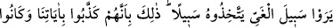

TEVRAT
144. (Allah) Ey Musa! dedi, ben risaletlerimle (sana verdiğim görevlerle) ve
sözlerimle seni insanların başına seçtim. Sana verdiğimi al ve şükredenlerden ol.
145. Nasihat ve her şeyin açıklamasına dair ne varsa hepsini Musa için levhalarda
yazdık. (Ve dedik ki): Bunları kuvvetle tut, kavmine de onun en güzelini almalarını
emret. Yakında size, yoldan çıkmışların yurdunu göstereceğim.
146. Yeryüzünde haksız yere böbürlenenleri ayetlerimden uzaklaştıracağım.
Onlar bütün mucizeleri görseler de iman etmezler. Doğru yolu görseler onu yol
edinmezler. Fakat azgınlık yolunu görürlerse, hemen ona saparlar. Bu durum,
onların ayetlerimizi yalanlamalarından ve onlardan gafil olmalarından ileri
gelmektedir.
147. Halbuki ayetlerimizi ve ahirete kavuşmayı yalanlayanların amelleri boşa
çıkmıştır. Onlar, yapmakta oldukları amellerden başka bir şey için mi
cezalandırılırlar!
Mûsâ (a.s.): “Sana tevbe ettim ben inananların ilkiyim” deyince Allah Teâlâ “buyurdu
ki: “Ey Mûsâ,” halinin ıslahı ve zâtının bakî kalması için seni rü’yetten (beni
görmekten) men ettimse de buna üzülüp kederlenme. Çünkü seni “ben risaletlerimle”
Tevrât’ın bölümleriyle ve levhalarıyla “ve” vasıtasız olarak “konuşmamla seni”
zamanında mevcut olan “insanların başına seçtim” yani, seni üstün kıldım ve tercih
ettim. Harûn (a.s.) peygamber olsa da, yaşça Mûsâ (a.s.)’dan büyük olsa da Mûsâ
(a.s.)’a uymakla emrolunmuştu. O, kelîm (Allah ile konuşan) ve şeriat sahibi değildi. Ya
da bu ifâdenin mânâsı, “Bütün insanların başına seçtim.” demektir Çünkü hem
peygamberlik, hem de Allah ile vasıtasız konuşma Mûsâ (a.s.)’dan başkasına nasip